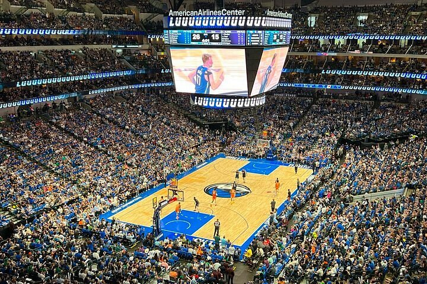

Dallas Mavericks - Fundado em 1980, o Dallas Mavericks se tornou uma das franquias mais populares da NBA, especialmente após conquistar o título da NBA em 2011, liderado por Dirk Nowitzki. A equipe continua sendo uma força no Oeste, com Luka Dončić emergindo como uma das maiores estrelas da liga. Os Mavericks buscam expandir seu legado e conquistar mais títulos com uma equipe jovem e talentosa.
Elenco - Luka Dončić (#77), Kyrie Irving (#2), Tim Hardaway Jr. (#11), Christian Wood (#35), Dwight Powell (#7), Josh Green (#8), Grant Williams (#3), Jaden Ivey (#24), Seth Curry (#30), Derrick Jones Jr. (#55).
Títulos NBA - 1 (2011)
Títulos Conferência - 3 (2006, 2011, 2021)
Estádio - American Airlines Center (20.000)
